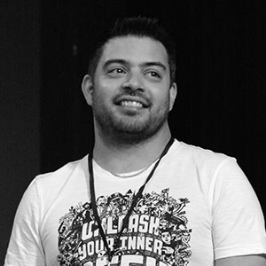
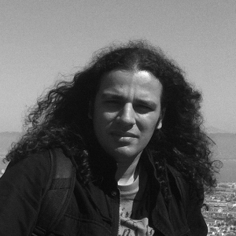
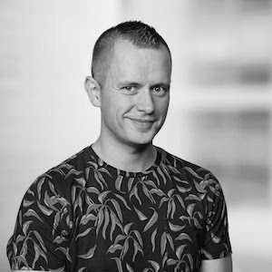

 |
||
SIMON MAPLE vJUG Founder/Organiser Simon is the Director of Developer Relations at ZeroTurnaround, a Java Champion since 2014, JavaOne Rockstar speaker in 2014, Duke’s Choice award winner, Virtual JUG founder and organiser, London Java Community co-leader and RebelLabs author. He is an experienced speaker, having presented at JavaOne, JavaZone, Jfokus, DevoxxUK, DevoxxFR, JavaLand, JMaghreb and many more including many JUG tours. His passion is around user groups and communities. When not traveling, Simon enjoys spending quality time with his family, cooking and eating great food. |
OLEG SHELAJEV vJUG Organiser Oleg Šelajev is a Developer Advocate. He spends his time testing, coding, writing, giving conference talks, crafting blogposts and reports. Oleg is a part-time lecturer at the University of Tartu and enjoys speaking and participating in Java/JVM development conferences such as JavaOne, GeeCON, DevoxxFR, GeekOut UK and others. In his free time, Oleg plays chess at a semi-grandmaster level, loves puzzles and solving all kinds of problems. |
 |
|
|
ROBERTO CORTEZ vJUG Organiser Roberto Cortez is a professional Java Developer working in the software development industry. Roberto mostly works with Java EE technologies and he is involved with the community to help other individuals, to spread the knowlegde or just to hang out. Roberto speaks at major conferences such as JavaOne, Devoxx FR, JFokus, GeeCon and others. He is also the leader of the Coimbra JUG and a regular blogger about Java related technologies. When not working he spend most of his time hanging with frinds, playing computer games and spending time with his family. |
IVAN ST. IVANOV vJUG Organiser Ivan St. Ivanov is development architect at SAP Labs Bulgaria, working in the HANA Cloud Platform performance team. He is a leader in the Bulgarian JUG, driving the adoption of OpenJDK and various JSRs in Bulgaria, as well as the jPrime conference. In his free time he likes contributing to open source software, mostly to JBoss Forge. Ivan is doing his PhD in the area of cloud multi-tenancy in the University of National and World Economy in Sofia. He is teaching Java and Java EE in the Sofia University. |
 |
||
ALAINA TUCKER vJUG Organiser Alaina is a digital marketing professional with 10+ years of experience, and a passion for education and community building. Currently working for Boston-Based cybersec company, Onapsis. In her spare time, Alaina enjoys following fluffy dogs around Boston and collecting 1st edition Stephen King Books |
BRIAN VERMEER vJUG Organiser Brian is a Developer Advocate for Snyk and Software Engineer with over 10 years of hands-on experience in creating and maintaining software. He is passionate about Java, (Pure) Functional Programming and Cybersecurity. Brian is an Oracle Groundbreaker Ambassador, Utrecht JUG Co-lead and Co-lead at TheSecureDeveloper. He is a regular international speaker on mostly Java-related conferences like JavaOne, Oracle Code One, Devoxx BE, Devoxx UK, Jfokus, JavaZone and many more. Besides all that Brian is a military reserve for the Royal Netherlands Air Force and a Taekwondo Master / Teacher |